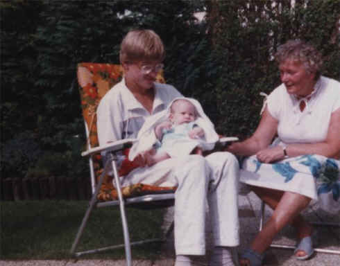

Wie is deze baby?

Antwoord: Joost van Asch
Winnaar:
Joost van Asch
Na 8 maanden turen kwam hij er achter dat-ie 't zelf was.
Deze foto is genomen in de zomer van 1987 in de tuin in de Lodewijk van Deysselstraat.
Verder op de foto Ton Kloppert en Nel van de Velde-Vermeij.
Joost; de eeuwige roem is voor jou!!!
Gevraagd: nieuwe opgave voor deze rubriek.
Heeft u nog ergens een oude foto, waarvan u niet meer weet welke
familieleden er op staan, waar-ie genomen is, door wie en waarom niet?
Mail 'm!